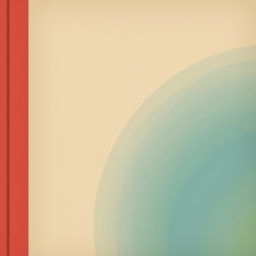

ENTROVERSU
entropy · universe · music
Grüezi Wohl ^^
Explore the Catalogue ↓Vision
Entropy: The natural decay of all things.
Universe: The infinite whole.
Music is the moment in between —
where chaos becomes order,
where the past lives on,
where decades collide.
where chaos becomes order,
where the past lives on,
where decades collide.
Welcome to the ordered chaos.
A sonic experiment at the intersection of human vision and artificial sound.
All concepts, lyrics and creative direction are human-made.
Sound production is AI-assisted.
Catalogue
16
albums released — 284 to go
- 1Black HorizonQT6FL2597586
- 2Beyond The EndQT6FL2597587
- 3Missy DeathQT6FL2597588
- 4Black Hound And The ReaperQT6FL2597589
- 5Deadly Shadow's WallsQT6FL2597590
- 6Knocking On Hell's DoorsQT6FL2597592
- 7Tommy CrossroadsQT6FL2597593
- 8Veil Of BlackQT6FL2597594
- 9Closing HoursQT6FL2597595
- 10Pale White LadyQT6FL2597596
- 11Ocean Of OilQT6FL2597597
- 12Misty SailingQT6FL2597598
- 13Devil And AngelQT6FL2597599
- 14World Gone BlackQT6FL2597600

- 1First Time We MeetQT6FY2560032
- 2Don't Be Afraid Young FlowerQT6FY2560033
- 3Hold Me TightQT6FY2560034
- 4A Rose Needs LoveQT6FY2560035
- 5Lovers In TimeQT6FY2560036
- 6A Free Flying BirdQT6FY2560037
- 7I'm Still Here, I'm Still TryingQT6FY2560038
- 8Your Love Is Killing MeQT6FY2560039
- 9Black And The EndQT6FY2560040
- 10Your Side Of The BedQT6FY2560041
- 11It Was A LilacQT6FY2560042
- 12Before It GoesQT6FY2560043
- 13Dreamy Sunday WaltzQT6FY2560044
- 14Phantom SummerQT6FY2560045
- 15I Always ForgetQT6FY2560046
- 16Your Tears Are My PainQT6FY2560047

003- 1A Rose Needs LoveQT6G92502481
- 2Boardwalk By The SeaQT6G92502482
- 3Wild Boogie OnQT6G92502483
- 4Together We Could DreamQT6G92502484
- 5By That TreeQT6G92502486
- 6ClaudiaQT6G92502487
- 7Coastal Love, We Could DreamQT6G92502489
- 8You Drift AwayQT6G92502491
- 9See Us AgainQT6G92502492
- 10Dancing In The DarkQT6G92502493
- 11Come On Until We Are DizzyQT6G92502494
- 12Wild Loving Fire Boogie WoogieQT6G92502495
- 13That's All We NeedQT6G92502496